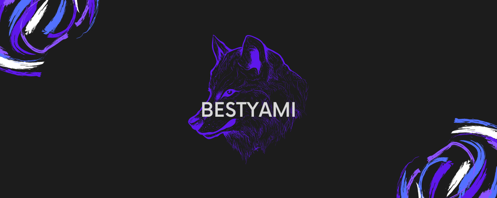
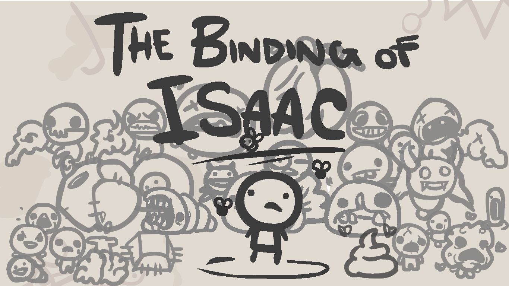

¿Qué es?
BestYami es un canal de la plataforma Twitch, este fue creado hace más de 2 años cuenta con redes sociales oficiales, así como con discord. En estas se dan anuncios de cuando esté en stream, sorteos o avisos del canal. Está enfocado principalmente a videojuegos, en él generalmente me encontrarás jugando, sin embargo también habrá días en los que solo quiera comentar algunos puntos o noticias interesantes. La finalidad de este mismo es compartir la felicidad y los momentos que paso cuando juego con más personas, suelo tener horarios constantes aunque pueden variar y de ser así se comunicara por alguna red social. Es un proyecto al que le tengo mucho cariño por lo apegado que soy a los videojuegos, es el hobby que más disfruto y seguramente lo siga siendo durante toda mi vida.
Variedad.
En el canal puedes encontrar una gran variedad de juegos que van desde shooters hasta juegos de supervivencia, y si tienes alguna recomendación la puedes dejar en el discord del canal, hay juegos como los siguientes.
VALORANT.

Valorant es un videojuego de disparos táctico en equipo y en primera persona ambientado en un futuro próximo. Los jugadores asumen el control de agentes, personajes que provienen de una gran cantidad de países y culturas de todo el mundo. En el modo de juego principal, los jugadores se unen al equipo atacante o defensor con cada equipo que tiene cinco jugadores. Los agentes tienen habilidades únicas y usan un sistema económico para comprar sus habilidades y armas. El videojuego tiene una variedad de armas que incluyen pistolas, subfusiles, escopetas, ametralladoras, fusiles de asalto y fusiles de francotirador.Cada arma tiene un patrón de retroceso que debe ser controlado por el jugador para poder disparar con precisión. El equipo atacante tiene una bomba, llamada Spike, que necesitan plantar en un sitio. Si el equipo atacante protege con éxito la Spike durante 40 segundos y detona, obtendrán un punto. Si el equipo defensor desactiva con éxito la Spike, o el temporizador de la ronda de 100 segundos expira, el equipo defensor obtiene un punto. Si se eliminan todos los miembros de un equipo, el equipo contrario gana un punto. Después de doce rondas, el equipo atacante cambia al equipo defensor y viceversa. El primer equipo en ganar 13 rondas gana la partida. Exceptuando el tiempo extra, donde deberás conseguir 2 victorias/rondas seguidas.
The Binding of Isaac

The Binding of Isaac es un videojuego independiente diseñado por Edmund McMillen y programado por Himsl Florian, estrenado en Steam el 28 de septiembre de 2011. The Binding of Isaac es un juego de acción RPG con fuertes elementos de tipo Roguelike, en el cual los niveles son generados aleatoriamente. En el transcurso del viaje de un niño llamado Isaac, los jugadores encontrarán extraños tesoros que cambiarán la forma de Isaac, le darán habilidades y poderes sobrehumanos que le permitirán luchar contra hordas de criaturas aterradoras y diabólicas, descubrir secretos y abrirse camino a su supervivencia. El título y la historia del juego están inspiradas por la historia del Sacrificio de Isaac recogido en la Biblia, según la cual Dios mandó a Abrahám sacrificar a Isaac, su único hijo.
Minecraft

Minecraft es un juego de mundo abierto, por lo que no posee un objetivo específico, permitiéndo al jugador una gran libertad en cuanto a la elección de su forma de jugar. A pesar de ello, el juego posee un sistema de logros. El modo de juego predeterminado es en primera persona, aunque los jugadores tienen la posibilidad de cambiarlo a tercera persona. El juego se centra en la colocación y destrucción de bloques, siendo que este se compone de objetos tridimensionales cúbicos, colocados sobre un patrón de rejilla fija. Estos cubos o bloques representan principalmente distintos elementos de la naturaleza, como tierra, piedra, minerales, troncos, entre otros. Los jugadores son libres de desplazarse por su entorno y modificarlo mediante la creación, recolección y transporte de los bloques que componen al juego, los cuales solo pueden ser colocados respetando la rejilla fija del juego.Los jugadores crean «granjas» que son para conseguir un determinado material más fácil por ejemplo una granja de oro. En el juego se pueden encontrar estructuras especiales como aldeas, galerías mineras, templos marinos, pirámides y templos selváticos.
Esto es solo una probadita de lo que puedes encontrar en mi canal así que ya sabes date una vuelta y disfrutemos juntos.